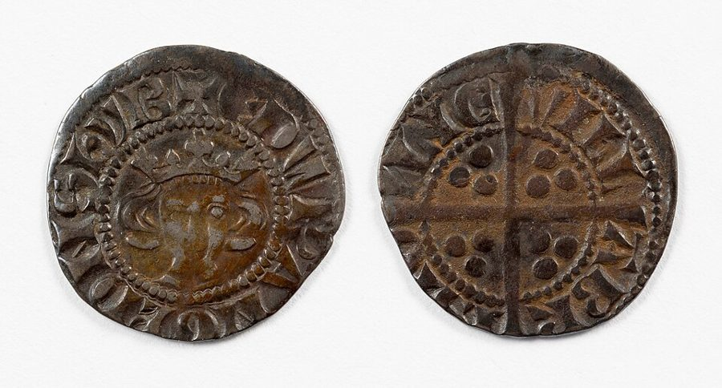

这一页在做什么
人人分工以后，人人都得天天跟别人换东西。这一章讲钱是怎么从这件事里长出来的：物物交换老是卡住，人们就挑出一种大家都肯收的东西，最后选中金属，再由政府盖上印记做成铸币。章末斯密抛出一个有名的谜题：水最有用，却几乎不值钱；钻石几乎没用，却能换来一大堆东西。这一章短，故事多，最后几段是下面三章的路标。

他想证明什么
上一页讲到人靠交换过日子。这一章要说的其实很简单：钱是为了让交换顺畅才出现的，它本身只是工具。斯密讲得像一部小历史：先是以物易物，屠夫想要的东西面包师没有，买卖就做不成；于是人们手边常备一样别人很少会拒绝的东西，牛、盐、贝壳、烟草、钉子都当过；金属耐放、能切小、还能熔回去，最后胜出；为了省掉每次称重、验成色的麻烦，政府在金属上盖了印，铸币就出现了。可是盖印的人也会动手脚，第 10 段斯密一口气算出英国、苏格兰、法国的钱缩水了多少。
读法：第 1–4 段和第 11–18 段先读，加起来不到两千字。中间第 5–10 段是铸币史，罗马的铜块、几种「磅」，可以只看第 10 段后半那几句骂君主的话。最后几段是下面三章的预告，斯密还为它们难读先道了个歉。
「先有以物易物，后有钱」这个故事讲得很顺，不少经济学教科书至今还这样讲，但人类学家找不到历史证据，见「今天怎么看」。
斯密落在哪：钱是分工社会里人人都要用的交换工具，金属铸币是为了省掉称重验货的麻烦才出现的；而斯密相信，各国君主都一点点减少过钱里的银子，让自己和所有欠债的人少还了债。
分节地图
这一页是卷一第 4 章，本站切成 3 节。粗体是本站起的节名；「杨译里找」后面是杨译里这一节开头附近的小标题或第一句；灰色的英文是原文这一节开头的几个词。标「先读」的是最短读法。
- 拿钉子去买面包劳动分工一旦确立，每个人就靠交换来生活WHEN the division of labour has …物物交换为什么卡住，人们拿过什么当钱。第 3 段那张清单从荷马的牛一直数到苏格兰的钉子，最好看。
- 铸币和君主的贪婪为此目的，不同的国家使用了…Different metals have been made use …称重验货的麻烦逼出了铸币，然后是罗马的阿斯、几种「磅」的细账。细账可以跳过，只看第 10 段后半：君主怎样靠减少含银量赖账。
- 水和钻石正是通过这种方式，货币…It is in this manner that …第 13 段是水和钻石，全书最有名的谜题之一。后几段预告下面三章，斯密还请读者多担待。
先用中文过一遍：这一页的概念
这一页用到的两个概念。讲的是概念本身；每块的「今天」说今天怎么看它。
§1货币 money; the universal instrument of commerce
大家都肯收、拿来买卖一切东西的那样东西。今天的教科书说它有三种用处：当交换的媒介（买东西时用），当计价的尺子（东西标价都用它），当存放财富的地方（今天不花，攒着以后花）。斯密这一章只讲第一种。他心里的钱是金银铸币，纸币和银行留到卷二第 2 章。
今天：今天的钱几乎都不和金银挂钩：1971 年美元和黄金脱钩以后，各国的钞票靠的是政府和央行的信用，大部分钱只是银行账上的数字。
在这一页：第 2–4 段讲它怎么来，第 11 段给它一个名字：「商业的普遍媒介」。
§3使用价值和交换价值 value in use; value in exchange
同一个「价值」，斯密分出两个意思：一样东西本身有多有用，和拿它能换到多少别的东西。两者常常对不上：水救命，却几乎换不到什么；钻石不能吃不能穿，却能换来一大堆东西。斯密在这里只提出问题，没有回答。
今天：这个谜题在 1870 年代由「边际效用」解开：价格看的不是一样东西总共有多有用，而是「再多一份」有多有用。水太多了，多一杯没人在乎；钻石太少，多一颗就很值钱。
在这一页：第 13 段。下面三章斯密给出他自己的答案（劳动和成本），那个答案后来也被改写了，见页 03。
故事和背景
这一页里的故事和 18 世纪的东西，按在书里出现的顺序排。
§1值九头牛的铠甲，和苏格兰的钉子村
第 3 段的清单从荷马讲起：《伊利亚特》里两个武士在战场上认出是世交，交换铠甲，一副值九头牛，一副值一百头牛，荷马笔下的人拿牛的头数给东西定价。往下是阿比西尼亚的盐、印度海岸的贝壳、纽芬兰的干鳕鱼、弗吉尼亚的烟草，最后是苏格兰的一个村子，斯密「听说」那里的工人带着钉子去面包店和酒馆付账。这个钉子村后来有了解释：1805 年给《国富论》出注释本的 William Playfair 说，那里的包买商把铁料发给钉匠，钉匠干活期间可以向包买商赊面包、奶酪和杂货，等铁料做成了钉子，再拿钉子结账。照他的说法，钉子是在还赊下的账。
§2一英镑缩水成三分之一
照斯密的说法，英镑和便士原本都是重量单位，先令大概也是：爱德华一世时一英镑就是一磅银子，一便士是一「本尼威特」银子，即一磅的二百四十分之一。斯密算了一笔账：到他写书时，英国的一镑一便士只剩原来含银量的三分之一左右，苏格兰的只剩三十六分之一，法国的只剩六十六分之一。他把这笔账记在「君主和国家的贪婪和不公」头上：钱里的银子少了，国王就能用更少的银子还清旧债，债主等于被骗了一截。这也是为什么英国的钱至今叫「磅」：名字留下了，分量早没了。
§3斯密先道个歉
这一章最后一段，斯密请读者「既要耐心，又要专心」：耐心，是因为下面的细节「也许有些地方显得没必要地啰嗦」；专心，是因为他尽力讲过之后，有些地方「也许还是有点晦涩」。他说他宁愿冒啰嗦的险，也要讲清楚。作者亲口承认下面难读，本站也顺势告诉你：下一页（卷一第 5、6 章）七节里只有两节标了先读；第 7 章那一页是核心页，要细读。
原典：斯密的原话
这本书是公版书，下面整段放斯密的原文，配本站的白话译。灰字说它在杨译的哪里，最后一行是这段里今天容易读错的 18 世纪词。
§2君主的贪婪和不公
第 10 段的后半，前面是一大段铸币名称的细账。在杨译这一章讲罗马的阿斯、英镑和利佛的那一大段的末尾。
For in every country of the world, I believe, the avarice and injustice of princes and sovereign states, abusing the confidence of their subjects, have by degrees diminished the real quantity of metal, which had been originally contained in their coins. … By means of those operations the princes and sovereign states which performed them were enabled, in appearance, to pay their debts and to fulfil their engagements with a smaller quantity of silver than would otherwise have been requisite. It was indeed in appearance only; for their creditors were really defrauded of a part of what was due to them. All other debtors in the state were allowed the same privilege, and might pay with the same nominal sum of the new and debased coin whatever they had borrowed in the old. Such operations, therefore, have always proved favourable to the debtor, and ruinous to the creditor, and have sometimes produced a greater and more universal revolution in the fortunes of private persons, than could have been occasioned by a very great public calamity.
本站译：我相信，世界上每个国家的君主和政府，都出于贪婪和不公，辜负了臣民的信任，一点一点减少了钱币里原有的金属。……靠这种手段，这些君主和政府表面上能用比原来少的银子还清债务、兑现承诺。但只是表面上如此，他们的债主实际上被骗走了应得的一部分。国内所有欠债的人也享有同样的特权：从前借的是旧钱，如今可以用同样面额的、成色变差的新钱来还。所以这种做法总是对欠债的人有利，对放债的人是毁灭；有时它给私人财产带来的翻天覆地的变化，比一场大灾难还要广、还要大。
斯密用 I believe 留了一点余地，但说的是「每个国家」，英国自己也在内。史学家补充：中世纪英国几次给便士减重，多和银子外流、钱币短缺有关，不全出于贪婪。今天政府不用再往钱里少放银子，通货膨胀起的是同样的作用，见「今天怎么看」。
- debased成色降低的（钱币里的银少了、杂质多了）
- nominal名义上的，面额上的
- revolution翻天覆地的变化，不一定指政治革命
§3水和钻石
经济思想史上最有名的谜题之一，整段。在杨译这一章倒数几段，讲「价值」一词有两种意思的那一段。
The word value, it is to be observed, has two different meanings, and sometimes expresses the utility of some particular object, and sometimes the power of purchasing other goods which the possession of that object conveys. The one may be called “value in use;” the other, “value in exchange.” The things which have the greatest value in use have frequently little or no value in exchange; and on the contrary, those which have the greatest value in exchange have frequently little or no value in use. Nothing is more useful than water: but it will purchase scarce any thing; scarce any thing can be had in exchange for it. A diamond, on the contrary, has scarce any value in use; but a very great quantity of other goods may frequently be had in exchange for it.
本站译：要注意，「价值」这个词有两个意思：有时指一样东西本身的用处，有时指拥有它就能买到别的东西的那种能力。前一种可以叫「使用价值」，后一种叫「交换价值」。使用价值最大的东西，交换价值常常很小，甚至没有；反过来，交换价值最大的东西，使用价值常常很小，甚至没有。没有什么比水更有用，可它几乎买不到什么，也几乎没人拿东西来换它。钻石正相反，几乎没什么用，却常常能换来一大堆别的东西。
这个对比不是斯密头一个说的：Cannan 注明，苏格兰人 John Law 1705 年的书里就拿水和钻石作比，柏拉图也说过水便宜。
- utility用处、效用。后来的经济学把它变成了专门术语「效用」
- scarce在这里是副词，等于 scarcely：几乎不
译本勘误
杨译这一章整体可靠。下面只收会把人读歪的一处。灰字是英文原文那一处的几个词；方框里是杨译的原句，在电子书里搜它。
§1钉子付账是常事，不是一个人的事漏译
it is not uncommon, I am told
译本：「我听说有一个工人带着铁钉」
原文说，那个村子里工人带钉子去面包店、酒馆付账「并不少见」，是一村的习惯。译本漏了这层意思，读起来像斯密只听说过一桩个别的事。钉子能列进「当过钱的东西」，正因为大家常这样付。
今天怎么看
这一章的主要说法和今天的判断。每条标签判的是那条论点，五种标签的意思：
- 成立今天的经济学和证据支持这句话。
- 部分成立大方向对，细节或适用范围要改。
- 过时说的是 18 世纪的世界，当时也许对，今天的制度和技术已经变了。
- 被推翻后来的经济学或证据说明它错了。
- 有争议经济学界至今没有定论，两边各有代表性的研究。
物物交换老是卡住，钱就是为了解决这个麻烦出现的
屠夫有肉没处换，面包师想要肉却拿不出屠夫要的东西；所以人们手边常备一样大家都肯收的东西，最后选中了金属。
§1 第 2–4 段铸币是政府给金属盖的质检章
称重和验成色太麻烦，还容易被骗，所以在金属上盖公家的印，斯密说多半先保证成色，后来连重量也保证，就能数着个数收付了，和给呢绒、麻布盖检验章是一回事。今天看，省掉称重验货这一面对；可铸币从来不只是质检章：盖印的人也能让钱缩水，斯密在第 10 段自己就说到了。
§2 第 7–9 段让钱缩水，等于替欠债的人赖账
君主减少钱币的含银量，用更少的银子还旧债；民间所有欠债的人也跟着沾光，放债的人吃亏。这说的是已经欠下的旧债；要是大家预料到钱会缩水，新借的钱就会要更高的利息。
§2 第 10 段书里的说法：先有以物易物，交换不便才逼出了钱
- 书里
- 第 2–4 段。斯密用的是「我们假设」「据说」，是一段推想出来的历史。
- 当时
- 18 世纪的苏格兰学者常用这种「推测史」，从人性推出社会的来历。
- 今天
- 人类学家找不到哪个社会靠以物易物过日子的记录：早期社会多靠互赠和赊账记账，以物易物多见于陌生人之间，或者钱突然不灵了的时候。这一派的代表是人类学家 Caroline Humphrey 1985 年的研究，和 David Graeber 2011 年的畅销书《债》。另一边是经济学家：讲钱为什么有用，至今仍从「你要的东西我没有」这个难题出发，Kiyotaki 和 Wright 1989 年的经典模型就是这样推出某种东西会变成人人都收的交换媒介。在这一边看来，不管历史上是不是这样发生的，斯密的故事当思想实验仍然成立。核对于 2026-10。依据：Humphrey, Barter and Economic Disintegration, Man, 1985；Graeber, Debt: The First 5,000 Years, 2011；Kiyotaki & Wright, On Money as a Medium of Exchange, Journal of Political Economy, 1989。
水和钻石，斯密回答了吗
主流看法：没有，这一章他只是提出问题。19 世纪 70 年代 Jevons、Menger、Walras 几乎同时提出「边际效用」：价格取决于多一份东西带来的好处，水的谜题才有了成体系的解答。
斯密的看法：第 13 段只区分两种价值；第 14–17 段预告下面三章去找「交换价值」的规律，他的答案是劳动和成本。
本站的评论：常有人说「斯密认为价值由用处决定」或「斯密解释了钻石为什么贵」，都不对，这一章他只提问题。有意思的是，斯密十几年前在格拉斯哥讲课时说过：水便宜是因为多，钻石贵是因为少（John Law 1705 年也这样讲过）。写书时他没把这句放进来，转去用劳动和成本解释交换价值；把用处和稀少合成一套理论，要再等一百年。读下一页时记住：他接下来给的劳动价值的答案，是后来被改写的那一部分。
本站的总体看法：这一章是全书最轻松的几章之一，值得读完。钱「来自以物易物」那段当寓言读就好；骂君主让钱缩水的那几句，今天换成「通货膨胀」照样成立：二战以后到 1970 年代，英美等国把利率压在通胀以下，让通胀一年年吃掉政府债务的实际分量（Reinhart 和 Sbrancia 的研究）。
精彩回顾
隔几周回来时看这里。想不起来，点节号回到那一节。
一句话：钱是交换的工具；谁铸钱，谁就忍不住让它缩水。
苏格兰有个村子拿钉子付面包钱。后来有人解释：钉匠是赊账干活，做完拿钉子结账。
§1照斯密的算法，英镑原来就是一磅银子；到 1776 年，英镑里的银子只剩约三分之一，法国的只剩约六十六分之一。
§2水最有用却不值钱，钻石没用却很贵。斯密提出谜题，一百年后边际效用才给出成体系的解答。
§3